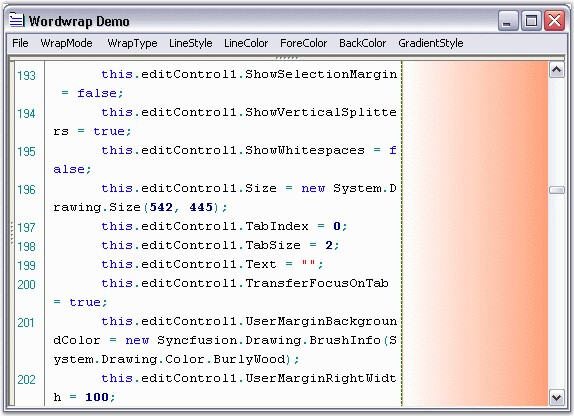
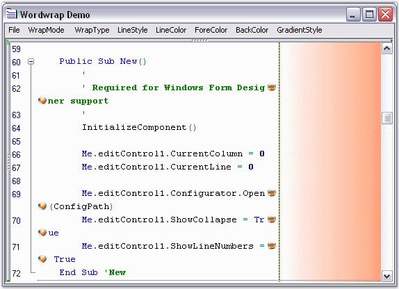

This section discusses the wordwrap margin customization settings. Also, it discusses how images can be set for the wrapped and wrapping lines of the Edit Control.
Margin Line Style and Line Color Settings
Wordwrap margin of the Edit Control can be set and customized by using the below given properties.
|
Edit Control Property |
Description |
|
WordWrapMarginVisible |
Gets / sets value indicating whether the wordwrap margin should be visible. |
|
WordWrapMarginLineStyle |
Specifies style of line that is drawn at the border of the wordwrap margin. The options provided are
· Solid · Dash · Dot · DashDot · DashDotDot · Custom
The default value is Solid. |
|
WordWrapMarginLineColor |
Sets custom color for the line that is drawn at the border of the wordwrap margin. |
|
WordWrapMarginBrush |
Gets / sets BrushInfo object that is used when the area situated after the text area is drawn. |
|
[C#]
// Specifies whether the wordwrap margin should be visible. this.editControl1.WordWrapMarginVisible = true;
// Specifies the line style of the wordwrap margin. this.editControl1.WordWrapMarginLineStyle = DashStyle.Dash;
// Specifies the line color of the wordwrap margin. this.editControl1.WordWrapMarginLineColor = Color.Green;
// Specifies the BrushInfo object that is used when the area situated after the text area is drawn. this.editControl1.WordWrapMarginBrush = new Syncfusion.Drawing.BrushInfo(Syncfusion.Drawing.GradientStyle.Horizontal, System.Drawing.Color.White, System.Drawing.Color.LightSalmon); |
|
[VB.NET]
' Specifies whether the wordwrap margin should be visible. Me.editControl1.WordWrapMarginVisible = True
// Specifies the line style of the wordwrap margin. Me.editControl1.WordWrapMarginLineStyle = System.Drawing.Drawing2D.DashStyle.Dash
// Specifies the line color of the wordwrap margin. Me.editControl1.WordWrapMarginLineColor = System.Drawing.Color.Green
// Specifies the BrushInfo object that is used when the area situated after the text area is drawn. Me.editControl1.WordWrapMarginBrush = New Syncfusion.Drawing.BrushInfo(Syncfusion.Drawing.GradientStyle.Horizontal, System.Drawing.Color.White, System.Drawing.Color.LightSalmon) |

Figure 37: Edit Control with Character Wrapping and Custom Painted Wordwrap Margin
Line Wrapping Images
It is also possible to associate images to indicate line wrapping. This feature can be turned on by setting the MarkLineWrapping property to True. There can be two types of image indicators:
1. Images that indicate the line that is being wrapped. These are displayed at the beginning of the line being wrapped. This can be set by using the CustomWrappedLinesMarkingImage property.
2. Images that indicate the point at which the line is being wrapped. This can be set by using the CustomLineWrappingMarkingImage property.
Also, to indicate whether wrapped lines should be marked, the MarkWrappedLines property can be used.
|
Edit Control Property |
Description |
|
MarkLineWrapping |
Specifies whether line wrapping should be marked. |
|
MarkWrappedLines |
Specifies whether wrapped lines should be marked. |
|
CustomWrappedLinesMarkingImage |
Gets / sets custom image that marks wrapped lines. |
|
CustomLineWrappingMarkingImage |
Gets / sets custom image that marks wrapping lines. |
|
[C#]
// Enable images to indicate line wrapping. this.editControl1.MarkLineWrapping = true;
// Images that indicate the line that is being wrapped. this.editControl1.CustomWrappedLinesMarkingImage = ((System.Drawing.Image)(resources.GetObject("$this.Sunset")));
// Images that indicate the point at which the line is being wrapped. this.editControl1.CustomLineWrappingMarkingImage = ((System.Drawing.Image)(resources.GetObject("$this.Blue_hills")));
// Indicate wrapped lines. this.editControl1.MarkWrappedLines = true; |
|
[VB.NET]
' Enable images to indicate line wrapping. Me.editControl1.MarkLineWrapping = True
' Images that indicate the line that is being wrapped. Me.editControl1.CustomWrappedLinesMarkingImage = (CType((resources.GetObject("$this.Sunset")), System.Drawing.Image))
' Images that indicate the point at which the line is being wrapped. Me.editControl1.CustomLineWrappingMarkingImage = (CType((resources.GetObject("$this.Blue_hills")), System.Drawing.Image))
' Indicate wrapped lines. Me.editControl1.MarkWrappedLines = True |

Figure 38: Wrapping Images indicating Wrapped Lines and Point of Wrapping